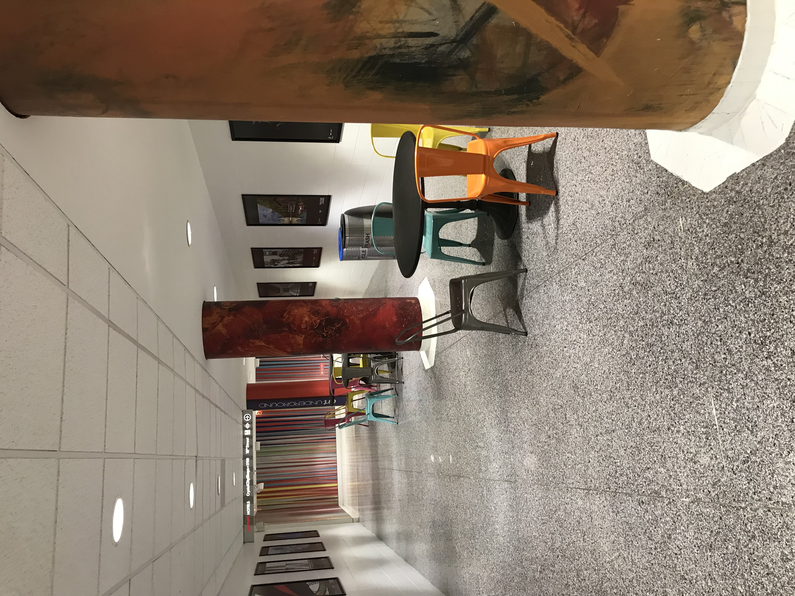

For more than 10 years, The Landing in Crystal City was a cornerstone of the DMV board game community. This page shows what made the Landing a great public space. It will also mention the history of Crystal City and how the Landing ended up being created. Difficultly in finding public space for board game events is an ongoing challenge. Also, having more available space helps groups that have a good location to play games, because space availability will be less of a challenge.
The page is a work in progress.
In 2002, I walked through the underground mall at Crystal City and ended up eating lunch at the food court that would later be converted to The Landing. While I found the idea of an underground mall to be interesting, I felt like the place was somewhat old and wasn’t very appealing to visit. I didn’t end up going back for a long time until around 2014. I noticed that the food court was renovated into this place called The Landing which had a large number of tables and chairs. Although I was looking to play more board games, I did not initially view The Landing as a place to play them. Around a month later, I started going to weekly events a board game store called Labyrinth. Shortly after, I ended up playing Kingdom Builder with someone who mentioned that there were board game events at The Landing every Friday. I went to the Landing on a Friday for board games and played Castles of Burgundy. I had a good time with the people I met, and saw a wide variety of games that I was interested in playing. The group was significantly larger than I expected, and members were very welcoming to people who were new. I was also happy that I could show up late and still join a game. Around 50 or more people would typically show up each Friday. The Landing as located was at a centrally located place with free parking, an indoor connection to the Crystal City Metro station, and a variety of food options. There was a large seating area that could fit around 100 people that was not very crowded, and we were able to stay there past midnight.
Unfortunately, the Landing as a public space started to decline as restaurants nearby closed. Some of the tables and chairs in nearby areas that we sometimes used were also removed. In 2021 I ended up becoming a host for the Friday games, and ran into challenges with the ongoing decline.
Chairs and tables from a nearby hallway that were removed. Also, the decline in availability of public spaces across the DC area was causing challenges. The Landing became increasingly crowded on Friday evenings because people didn't have an alternative public space where they could meet. As the Landing became more crowded, tables and chairs started to be removed, which made it harder to host events there. While there were bars and restaurants nearby, expensive food prices, limited opening hours, or limited table space were issues. On the other hand the Landing was open past midnight, and people didn't need to spend money on expensive food. On Friday, August 30th, 2024, I found out that the tables and chairs were removed from the Landing.
Initial history of Crystal City
Crystal City after BRAC
Decline of the Underground, loss of viability of the Landing, and losing the tables and chairs.